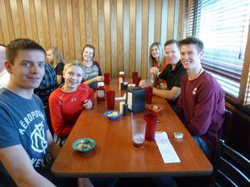
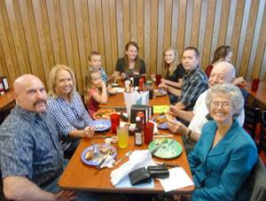
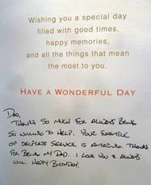
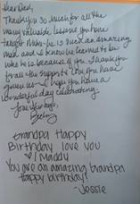
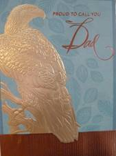
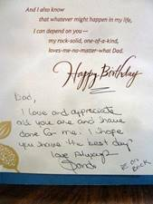
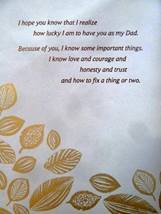
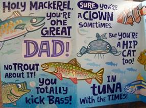
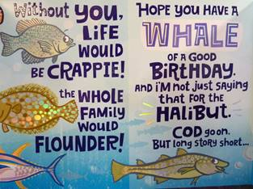

Monday, February 01, 2016
Mae started a liver cleanse this morning but by noon, she was so sick to her stomach that she gave it up. I didn’t feel very well today so really didn’t do much today. I did read more of Revelations during the day. I worked on some more histories that I am writing and I e-mailed some information to Betsy Browning, concerning someone’s entry on Family Search that Dad Browning “Charles Browning” was in a wheelchair before he died. I wanted to make a correction to this entry. Mae helped me quite a bit by editing some of my works including my January journal. I got January’s journal printed and stored in my hard copy folders.
Tuesday, February 02, 2016
I woke at 3:20am and was afraid that if I went back to bed I would wake Mae, so I went into the front room and lay in the recliner. Still unable to sleep as I continually thought of anyway I might be able to help my children see the needs to change and live the Gospel of Jesus to the fullest extent one can. After getting things cleaned up after breakfast, Mae put our pills together. She set up three weeks at a time and it seems that she always has to refill the pill boxes. It is hard to believe how fast those three week go by. While she was doing that we watched a good western show on TV. I started a second show as Mae wanted the use of the computer. The show hardly started when they took the Name of God in vain, so I just turned it off. Mae is putting a lot of work into the presentation she has been asked to give for the Clinton Stake Relief Society meeting on the 25th of February. In some of Mae’s perpetration we got on Family Search and noticed that Betsey had made a correction to Dad’s record. It is ok but I thought it was my place to enter that information as I was the one that found the error. Oh Well! It’s corrected. I started reading more in the Book of Revelations but I fell asleep and slept for quite a while. We had lunch when I woke and then I was going to restart my reading, when Gary Nelson came. We enjoyed having him come to visit. He had some time before an appointment to go Square Dancing. We visit and then Mae prepared some dinner for us including Gary. He then left for square dancing. He told us that he is presently going square dancing eight times a week. After Gary left I helped Mae do up the dishes. I then went to my reading and Mae worked on the computer. I am almost finished with the reading of the New Testament and I can say that for the first time in my life I have thoroughly enjoyed from Acts to Revelations and it is all due to “The New Testament Made Easier” written by David J. Ridges. I have always enjoyed Mathews, Mark, Luke and John but have never been able to understand until this time the remainder of the book. Mae and I played three games of Rummikub and I skunked her tonight. THAT IS VERY UNUSUAL FOR ME, SO I HAD TO ENTER THIS IN FOR THE RECORD.
Wednesday, February 03, 2016
I woke at 3am but went back to sleep and got up at 7am. I prepared breakfast of omelets, to try out a larger frying pan. It worked ok so that is what I will use when we got to Irven’s Thursday. Mae and I went to Home Depot, where I returned some extra materials from David’s job. We did some shopping at Home Depot, the $1.00 store, Wal-Mart’s, Cost Co, Good Earth Health store and went to Dr. Flinder’s. For our lunch we started with corn nuts at the Dollar store, potatoe wedges at Wal-Mart, samples at Cost Co and before we left Cost Co we bought a frozen yogurt, eating it as we drove to the Doctors office. This evening Nolan came over and rubbed my back and really gave me some relief. We sure enjoyed having him come and enjoyed his visit. Mae had cooked a wonderful soup and she invited Nolan to eat with us, which he did. It was good to have him here. Before Noland left he commentd that tonight is the first time he has eaten a real meal for a long time. His meals usually consist of Granola bars. I finished reading the New Testament this evening before we went to bed.
Thursday, February 04, 2016
I started reading the Book of Mormon this morning. After breakfast Mae and I started packing to go with Bryce and Deanna to Logan. Bishop Mullins stopped by to ask us if we would check to see how Dorma Cosper is doing and also find out how Sister Jeneane Browning is doing. He has been so busy with Ravee being so sick that he hasn’t been able to catch those two Sisters at home. Dorma was not home while we were still home and we left for Bryce and Deanna’s right after noon. Bryce, Deanna, Mae and I met Irven and Sandy at the Logan Temple at 2PM. During the Session, Mae and I were asked to be Session Witnesses. It was a very enjoyable session. All of us went to Irven and Sandy’s where Irven and Sandy prepared a very good dinner of Corn Beef Patties. After dinner we visited and played games until quite late before going to bed.
Friday, February 05, 2016
We slept in and when we got up I prepared a large egg omelet for breakfast. We did some visiting but Bryce said that he would like to drive to Idaho to see Terry and Angela and their new home. Therefore Bryce, Deanna, Mae and I got our things packed up. I think that Irven and Sandy were just a little hurt with us leaving so soon. If we would have had a larger vehicle I am sure that they would have liked to gone with us. It was somewhere around 10:30AM when we got away. We drove to Chubbuck getting there about 1PM. We stopped at a Smiths grocery store and bought something to eat at the Deli Bar. We planned on eating it before going to Terry and Angela’s, however Bryce hurried and ate his food and drove to Terry’s. Deanna and Mae finally got him to drive about a block further where the rest of us finished our lunch. We then drove back to Terry’s where we visited with Terry and Angela and saw their new home. It is quite a lovely home and quite large. We enjoyed visiting with them. We left for home about 3pm. Bryce got me telling him some of my life history from the time I went into the Air Force until Mae and I moved into Ogden. By that time we got to Bryce and Deanna’s home. I wish that I could have had a tape recording of our visit. It would have filled in a lot of my life history. Mae and I then drove on home. It was after 5pm when we got home. After unpacking Mae and I went over to Darmma Cosper’s home and visited with her for a while. We returned home and got some dinner and watched a TV show before going to bed.
Saturday, February 06, 2016
Shortly after getting up this morning we had our breakfast. David called just as we started and asked if he could borrow a tool from me, which of course I said that he could. He stopped in and we went down and got the tool, plus I returned his drill to him, which had been put in my tool trailer when we cleaned up his garage after building the climbing wall in it. I also gave David “the In Store Credit” I had received for the materials that I had returned. I then drove down to Bountiful to Dr. Toone’s office where gave me an adjustment. From there I went to see Bob. His hearing aid has quite working and so I had to use the white board to communicate with him. He was asleep when I entered his room and so I woke him. The TV was on and was tuned into a BYU basket ball game which we watched. During the first half of the game, the two teams stayed almost even, trading positions on the score of leading back and forth. In the 3rd inning BYU seem to be in lead most of the time and in the last quarter BYU took and held the lead to the end of the game. It was a good game. I left Bob and went to a copy office where I had them make some copies for Mae. On the way home I stopped at Wall Greens and canceled my prescription that Dr. Flinders had given me for a muscle relaxer, as David had looked at the one prescription that I have from Dr. Lee and said that it was still good for another year. Saved us a little money and at this time we need to do that. Mae and I had some lunch when I got home. I then laid down and took a nap for a while. I did work on my Diary editing more entries. This evening Mae and I planned on watching a TV show or one on Netflix but Marianne Ray called and talked to Mae for over two hours. Mae did come in for the tail end of the 2nd show.
Sunday, February 07, 2016
We woke early and then I fell back to asleep but was woke by some kind of noise. Weather it was a real noise or something in my dream but when I woke I was quite depressed. I guess my concerns are over our finances as we aren’t doing very well. I have a feeling that we should sale our camper and pickup, plus my boat and tool with the tool trailer. Mae doesn’t feel that way but as I see our finical situation we have little money to use those items and I am getting to old to do much side work. We will have to see how things go. Meetings went well. After the block programs Brother Jeff Jones and I went out taking the Sacrament to some of the shut-ins. When we finished and I got home, Mae had dinner ready. After dinner Mae and I went up to David’s where some of our family had got together to watch the Supper Bowel. I really wasn’t interested in the Football game as I haven’t followed it at all, but is was a good game. After getting home I entered this entry to my journal before we went to bed.
Monday, February 08, 2016
Mae woke about 6:30 and laid in the recliner in the front room. I woke about 7:45. After breakfast I helped Mae change and make the bed. Mae has been busy getting the washing going. Mae went with me at 10:45am to Rosie Harper’s place to find out what needed to be done to fix a tap that is leaking. Tom and Sheila are Rosie and Sarah Harper’s parents I believe by adoption. Tom came over to help me. With him being Deaf and communicates mainly by sign language, it made it interesting but we did ok. The tub faucet wasn’t just leaking but it was running a steady stream. After getting the faucet disassembled I decided that it was due for a complete replacement. I went over to Durk’s in Layton to get a new faucet. While in Layton I picked up the plate for the 22 rifle for Jeff at the Engraving shop. I came back and installed the new faucet but by the time I finished with the job, I had put in about 6 ½ hours. Mae has been on the phone or at Marianne Rays quite a bit of time today. I am not just sure what is to be done with that lady. Mae has also been on the phone with both the power company and the gas company and has put our billing on an equalization plan that will allow us to budget easier. She also talked to the power co. as to why after all the insulation and repairs I had made to our house the bills are about the same as last year? He told her that last year the average temperature was 10% warmer than normal and this year it is 20% colder than normal. Therefore if our bill is about the same, then we are actually saving about 30% over last year. That helped us feel better about all the work I have been doing. I was sure tired when I got home this afternoon and just quite. I did watch a show on Netflix, then filled in this entry and went to bed.
*** Tuesday, February 09, 2016
I was up some during the night but did get enough sleep. We had a relaxing morning and Mae made Skillets (fried eggs over hash browns, however in our case over sweet potatoes) for our breakfast. I did some chasing that took about 3 hours. I took the 22 rifle down to Lee’s Gun shop to have the engraved plate mounted to the stock. I then went to Wall-Mark and the dollar store where I purchased Mae a nickels and ear ring set, a nice Valentine’s Day card, and a dozen silk long stem roses and vase. This afternoon we went visiting the Hiltons and Brother Siglin as Visiting Teacher and Home Teacher. For a message I used President Uchtdorf’s message in the February Ensign, “Landing Safely in Turbulence. I related two incidents that I experienced when I worked in Alaska and how we had to travel by airplane. 1st when we arrived at Anchorage Alaska and the turbulences we encountered as we crossed over the Mountain to drop into the Anchorage airport and 2nd when we transferred from village to a village. Both occasions, it was the pilots continual watching the guide lines that made it possible for the planes to land safely on the runways. When we got home and started to get dinner, however Marianne came here and she talks continually. Instead of eating we just left the food and went visiting to Sister Leah Neilson. She is such a delight to visit. I gave the same message there but with different emphases. She is such a delight to visit and is trying so hard for the Eternal Reward. When we got home and about ready to eat Mae noticed that she had several missed calls and while she was trying to contact the missed callers Marianne called again. I personally feel that this whole thing with Marianne is being handled wrong as I don’t think Mae should be involved with it, not alone being right in the middle of it. Mae is also trying to line up a Temple trip with her siblings.
Wednesday, February 10, 2016
Mae didn’t sleep the best last night. I slept ok but woke at 4:30am and though I went back to bed I didn’t get much more sleep. We prepared breakfast and then Mae got ready to attend the Temple and then went down to see if she could get things arranged, with the power company, to have Marianne’s power turned back on. That was 8:30am am she got home after 10am. Bryce came, Kim and Jeannine came, Georgia and Rick came and Terry drove down from Pocatello to be with us. We enjoyed a beautiful session at the Temple and then all of us went downstairs and ate lunch together. It was very good for all of Mae’s siblings to be there together. On the way home we stopped at Seagull Book where we bought a few items. We then went to the Dollar Store for a few items before coming home. Brother Lee Gifford stopped by to give me the check for the parts I purchased at Durk’s plumbing for Harpers tub that I repaired yesterday. Mae went down to Marianne’s and found that the power had been turned back on just before Mae got there. After some dinner we went visiting to Sister Lemon and to Marianne which completes our monthly assignment. We haven’t visited with the Patterson’s as it is their turn to visit with us. So I don’t know how that will be counted. We played Rummikub this even and I won 2 out of 3 games tonight.
Thursday, February 11, 2016
We went to the Temple this morning and had Max Fife, Jeff Jones, Ton and Sheila Harper, Mae and myself in attendance. I feel bad that we don’t get more to go but we enjoyed the session. Ton is so amazing to help as he is totally deaf from birth and only reads at a third grade level. The first time that I assisted him the monitor that is provided had closed caption but this time it was done in American Sign. I asked Sheila which was best for Tom and she said the American Sign as he only has a 3rd grade level of reading. Sheila is also confined into a wheel chair as she had polio as a child. To me they are both amazing. Following the session we all went to the cafeteria and ate lunch. After getting home Mae did up some washing in preparation to go to Jeff and Gales tomorrow. At 4pm we went with the Full Time Sister Missionaries to visit Jackie McDough, who lives across the street from us. Although Jackie has not been baptized a member of the Church, she is an amazing Lady and a daughter of God. Mae attended choir practice this evening. This evening we did more preparations in getting ready to go to Jeff and Gales tomorrow.
Friday, February 12, 2016
After breakfast we finished getting ready to go to Jeff and Gale’s. I was going to start packing the car when we got a call from Tom’s Gun Repair to tell me that he had Jeff’s 22 Riffle ready. I drove down to his shop and got the riffle. We got talking and I spent almost an hour there. When I got home we packed the car. We then went to the service station and fill the car with gas and took it through the car wash. It was 1pm when we actually got away and it was after 3pm when we got to Jeff’s home. We got most everything unpacked by the time Jeff got home from work. Jeff then took all his family and us out to eat at Golden Corral. We first went to Cost Co. where Jeff bought three canoes for the children. He plans on purchasing some larger ones when those come into the store. After returning home the children soon went to bed. The four of us, Jeff, Gale, Mae and I then played a game of Rummikub. While playing, we also discussed the possibility of having our Family Reunion at Jeff and Gales.
Saturday, February 13, 2016
It was after 8am when Mae and I got up for breakfast. I had got up at 5:15am and had read for a half hour before going back to bed. When I got upstairs for breakfast all of Jeff’s family had already eaten. Mae had made us some hotcakes and eggs. Mae, Gale, Jeff and I discussed in more detail the Family Reunion plans. I am concerned that there is more details we need to settle before a final decision can be made. I don’t want to heavy of a load to be placed on Jeff and Gale. While Mae and I ate Gale was also making preparations for Rachael’s baptismal. Mae and I were going to play a game of Old Pig with the children when Mae stood up to take a glass of water away from the table when she stepped on a piece of plastic and slipped, falling to the floor. She says that she is ok, but I am quite worried. I went with Jeff to do some shopping and looking for a Gun Rack that he could mount to the wall to display his riffle. When we finished shopping we met all the rest at the school where Ben played basket ball. Ben is learning and seems to be enjoying the game. After returning home Mae and I had some lunch. Mae is hurting and I am quite worried but she insists that she is doing ok. I laid down and took a nap and then entered some into my journal. The family is watching Star Wars on Netflix but I have a hard time hearing it and so after dinner this evening I came downstairs to our room and worked on my journals. After the movie ended Jeff, Gale, Mae and I played Harts in which Gale won with Jeff loosing the further I have ever seen him loose a card game. Mae and I took our showers before going to bed at 11:30pm.
Sunday, February 14, 2016
We were able to sleep until about 7:30am before getting up. I really enjoyed my scripture reading this morning and especially a cross reference to Ezekiel 18:21-32. We joined with Jeff, Gale and the children for breakfast of eggs and hash brown potatoes. We attended the Church block meetings at 11am to 2pm and really enjoyed the meetings. The noise of being in a family meeting is sure much harder for me to hear the talks than in our Ward where we have no small children. Everyone just seem to eat lunch when they felt like it but this evening we had a very nice dinner as a family. Before going to bed Jeff, Gale, Mae and I started a game of Hand & Foot. Mae is still felling ok after her fall. What a blessing that is as she really slipped and fell quite hard landing on her butt. At this point she is having very little effect over the fall she took.
Monday, February 15, 2016
Because of Presidents Day there was no school today so the children were home. Mae and I spent most of the day with the children so that Gale could get some things done around the home. This evening Jeff, Gale, Mae and I continued our game of Hand &Foot of which Jeff and Gale won. It looks like everyone of our family are in favor of holding our Family Reunion here at Jeff and Gales this summer, July 7th through 11th.
Tuesday, February 16, 2016
I woke up at 4am and read for a while using Brother Ridges book, the Book of Mormon made Easier, and really enjoy his concepts and insight. I also enjoyed the concept that a Brother made in Sunday School when he told of his son saying that if he became a God, he would create a world where he could have beautiful streams where in he could just go and catch 20 lb. Rainbow Trout’s. He then said to his son that if every time you always caught the same size trout every time you cast in, wouldn’t it soon become boring? That thought has made me realize that if we always have the same perfect day; day after day that soon would become quite a bore. Liken that to those that think that if they achieve Terrestrial Glory, they will always be happy. Then realize that only will the Celestial Glory give us continual advancement and expansion. Brother Ridges also gave me more insight on “Forgiveness”. I have not got a complete comprehension of the principle. My question is, if you forgive and forget, do you just wipe out that memory from your life? I can’t comprehend that, yet! I went back to bed and slept until after 8am. Mae was up when I woke, so we got ready and prepared breakfast of fried trout, egg’s and toast. Gale had an egg with us but didn’t try the trout. After cleaning up I went downstairs and worked on my journals. I took a break and had some lunch and then continued on my journals. I am now on March 20, 1974 of my Diary.
Wednesday, February 17, 2016
I was up at 5am and enjoyed reading in the Book of Mormon with David Ridges added insights. It helps me gain greater understanding of the Scriptures. I am so grateful for the testimony of the plan of life, my Savior and his atoning sacrifice; the goals the Gospel give to me, my Temple Blessings and the desire to have my wife for all Eternity. I hope that somehow I can pass that on to my children! Although you can see, off in the far distance, the mountains, it seems so different to be so far away from them. I helped Gale hang shelves and pictures on their walls. When Ben got home from school, he and I went down to their neighbors two houses to the west. Gale had called earlier and they have needed tools to cut Ben’s pine wood derby car out. He has a band saw that is very accurate and then a belt sander that finished the wood so that it is ready to paint. He also made some fins that Ben wanted to have on the car. That sure made my job a lot easier. We glued the fins onto the car and I put the first coat of paint on the car. Mae had made lasagna for dinner, which we ate when Jeff got home from work. After dinner and we cleaned up the kitchen and then all of us went into Jeff and gale’s bedroom and watched part of a Star Wars movie until the children had to go to bed. Mae, Jeff, Gale and I then played games until 9:30PM. I then put the first coat of paint on the pine wood derby. We then got ready for bed and I added this entry into my journal.
February, Thursday 18, 2016
I am not sure what happened to my journal entry yesterday but this morning there was two entries and as far as I can see this is now the same as the second entry for February so I will delete the other. I woke early this morning and read for a while before coming back to bed. When I went back to bed I could see stars from our window but when we woke later it was raining. I am kind of depressed with life this morning but hope I can get out of it. I put a 2nd coat of paint on the pine wood derby. I hung wall items for Gale this afternoon. We got a text about 4:30PM from Shauna informing us that Tyler and Emily were in an automobile accident this afternoon as they were returning home from school. We called back to get more details. Evidently the Morgan area received quite a bit of snow today. As they were returning home from school in their little red car, another vehicle cut close in front of them and splashed heavy slush onto their windshield. Tyler applied the brakes, tried to get the windshield wipers on to removed the snow, and pulling off the road, over steered and took out several gard poles. Both Tyler and Emily received some injury but not serious. The car was totaled and that is sad but we are grateful to hear that Tyler and Emily are ok. Jeff and I went shopping this evening to get final supplies for Ben’s Pine Wood Derby. We got back home just as Gale was taking Ben to basketball practice. Mae had dinner ready. After eating Jeff, Mae and I played a game of Harts. I won this time. Jeff was very tired this evening so we let him retire early tonight. We went downstairs and I worked on my journals before we went to bed about 10:30pm.
Friday, February 19, 2016
After breakfast this morning I worked on the pine wood derby car. With Matt’s help I got the axels polished and the tires sanded smooth. I put a 3rd coat of paint on the car. When Mat left for school, then Mae, Gale and I went to the Twin Falls Temple where we went through a Endowment Session. Mae and I were asked if we would by the company witnesses. Following the Session we went into town where I filled up the car with gas. We then went to a bakery where Gale bought some bread. At the bakery they also gave us a sample of their bread. We then went next door to a yogurt shop and bought a yogurt for each of us. I was really impressed with their yogurt and the price was much more reasonable than the shop in Ogden and Chandler. After getting home I finished the car by adding the lead weight to the car, making template of a light ling strike that I then painted on both sides of the car and then mounted the wheels. It turned out pretty sharp, now it depends on the speed. Mae offered to tend the children so that Jeff and gale could go out this evening for their wedding anniversary. She then watched the Star Wars movie while I worked on the Pine Wood Derby car. Before going to bed Mae and I got everything of ours that we could pack and put in the car so we can leave early for home in the morning.
Saturday, February 20, 2016
Mae was up by 4am and I got up at 4:30am. Jeff had told us after they got home last night that he was thru with my plainer so I had to rearrange things in the car so I could but the plainer into the car. It was 6:15am when we got away for home. We drove straight through until we got to Ogden where we made a stop at Winco in Ogden for some groceries. After unpacking Mae and I took a short nap. This afternoon I went over to Scott’s where I patched a spot where they had water damage in their RV. I stopped on the way home and bought us some chicken for dinner. I spent the evening with me. I helped Mae some with getting dinner ready for tomorrow. Mae already had a lot ready for dinner tomorrow, as she has invited David’s family over for dinner. I did give her a hair cut before we showered.
Sunday, February 21, 2016
We enjoyed a relaxing morning. I took a short nap as I had a headache and was cold. I woke feeling much better. Meetings were very enjoyable although we were sorry that Emily was not on the program playing the violin. When we got home I helped Mae finish up dinner before David and his family got here. We had a very nice meal and they enjoyed coming. We found out that it was Tyler’s girlfriend that caused the accident as she was teasing Tyler by splashing snow on him. They found out that it isn’t a good thing to play around at 80 mph on a freeway. We can just be grateful that it wasn’t much more serious. David told us that he has been asked to give a speech as the main speaker at a Pharmaceutical Convention and will be paid $1,250 for a 1 hour presentation, plus paying for his flight, meals and room. Wahoo! Mae and I played a game of Rummy and I beat her every hand.
Monday, February 22, 2016
I slept well last night but Mae didn’t however she was up by 6:30 and had been up 3 or 4 time before that. She went right to work with regular duties. We exercised before breakfast however I think I did more than I should have with my right shoulder. I am not sure but I am possibly getting authorizes in the shoulder. That seems to come with old age! I really enjoyed reading the 5th chapter of our Priesthood Manuel “President Howard W. Hunter” this morning. I received quite a bit of insight about “Receiving Revelation” and maybe it was also due to the talk Scott and I had Saturday while I was at his place. Mae and I went down to Gifford’s and visited for a little while and them Lee took us out and we went over some of the gardening with him while Mae took some notes. After lunch I took a short nap. This afternoon I went a store (Scrubs) that sales Dansko shoes to Roy, but they didn’t have my size. While there I stopped at a hobby store looking for a Chess Timer, but they don’t carry any but they called a Hobbie store in Clearfield and they have Chess Timers. I did go there but I believe that I can find one on line at a lower price. I bought a set of shelves that I can use to store our water storage on, at Home Depot. After dinner this evening I assembled the shelves and then Mae and I watched a western show on TV that was pretty good.
Tuesday, February 23, 2016
I slept well last night but Mae got very little sleep and so I tried to be quiet so that she could get more sleep. That didn’t help much because she didn’t go back to sleep but got up before 10am. I got the shelving put in the water room and put the cases of bottled water on them. It worked prefect for the water but I am not sure where I am going to store the glass and screen to our front storm door. I helped Mae with her power point presentation adding some animations, creating some more slides and changing some sequences. I set up the projector and had Mae do some practice with the live presentations so that she is familiar with the mouse in advancing the slides as she gives the script. We also did the display table arrangement. I watched a couple of shows today, one on TV and one on Netflix, while Mae practiced her presentation. I believe she is about ready. We had Brother and Sister Patterson come over for our monthly visit. I also took some stew that Mae had made, down to the Hilton’s. I also visited with Roy a couple of times today. He seems to be doing ok. I also called Irven and Sandy concerning the Browning Reunion he is trying to get together this summer.
Wednesday, February 24, 2016
Mae slept some better last night. After breakfast I took my shower and then went shopping for Mae and to look for Dankso shoes for me. I picked up Bob and took him with me just so he could get out for a while. He is still Bob but is still a great brother. I did find the shoes I wanted and they were having a Annual sale, so I got a better price on them. I stopped at Smith Grocery store and bought some items for Mae plus I bought some fried chicken for Bob and I. When I returned home I helped Mae some on her presentation and also watched some TV.
Thursday, February 25, 2016
We both slept pretty well last night. After getting up we had breakfast and soon went to the Temple. Lee & Glory Gifford, Tom and Sheila Harper, Sam and Diane Hess also attend the Temple with us. After the Endowment Session the Giffords went on home as Lee wasn’t feeling well. The rest of us went to the Sealing office where Sister Harper had made arrangement for us to do some family sealing’s. It was a very Spiritual and enjoyable experience. We stopped on the way home at Costco where I returned the flash light that David had given me last year for my Birthday, as it doesn’t work and there is no place where I can get it repaired. Mae also picked up a few groceries that we needed. When we got home I packed all of the items that Mae needs for her presentation into the car. I then took a short nap before we went to the Clinton Stake center where we set up her displays and the projector. I had forgotten to bring our screen but Steve Smith was there and he was able to get one for us. I have a little time before the program will start so I entered this journal entry. Well Mae put on the presentation for two group and went way over the 50 that she had planned on having. The first group consisted of over 40 Sisters and the 2nd group was almost that full. It went well and I think that everyone that attended enjoyed it. In appreciation of Mae participation in the program the Stake R.S. Presidency gave Mae a loaf of Great Harvest bread and a nice thank you card. It was about 10PM when we got home, although we stopped at Del Taco’s for something for Mae to eat as she fasted before the program.
Friday, February 26, 2016
We both slept well and got up feeling refreshed. Mae and I worked together getting breakfast. We then got ready and went over to Ron and Diane Graf’s by 10am and they were ready for us to ride with them. We stopped at Bob’s and I returned his white board to him. We drove to Salt Lake where we went to the Church Museum on West Temple. This is the first time that we have been there since they have completely rebuilt it. It is amazing and very enjoyable. We only saw the part of the main floor with still a lower floor and an upper floor. It was really a Spiritual experience to be there. By then we had been there for almost 4 hours. We were tired and hungry and so we left the Museum. From there we went to Chuck-a Rama for dinner. Ron insisted on paying for the meal. I did beat him to the tip. We had a wonderful lunch and then went up to the Salt Lake Cemetery South of the University of Utah. Ron drove through the cemetery where we saw at least 2 dozen deer that stay and feed there year around. All the deer that we saw were does without even seeing one buck. That was interesting. We came back to Ron and Dian’s and from there Mae and I did some shopping. We got home after 6pm where we took a short nap. At least I took a nap but Mae only rested. We then went to Dave and Pat Presnell’s where we played games and visited with them. Pat had treats for us to enjoy as we enjoyed the evening. We played Trans America and Dave won that game, we then played Farkel and I lost out almost right from the first. Mae took the lead, while Pat and Dave stayed close to each other. Dave was a little ahead of Pat and Mae went over the limit so she would win. But we each got one more try to catch Mae. Neither pat or I could even get close. Dave in next roll scored all die and so got to start over and continued scoring all die the second, third and fourth set and with the fifth set he passed Mae and won the game. It was 10:30PM when we got home. Before going to bed I entered this entry.
Saturday, February 27, 2016
Today I am 77 years old. We were able to relax and enjoy the morning. Mae prepared a nice fried fish breakfast. I got some Birthday Text this morning and I replied to them. Mae went visiting to some of the ladies here in the park. I played three games of Harts, lost one, came 2nd in one and won one. I then took a nap. We met ½ of our family over at Golden Corral at 4pm for dinner. Sandy and Gary, David’s family and Scott’s family met us there. Mike couldn’t make it today and of course Jeff is in Idaho and Shellie is in Arizona. We did hear from those that couldn’t make it. All the kids went in on buying me my Dansko shoes plus Sandi bought me my new fishing license. I told her that she shouldn’t have done that not when she went in on the shoes but she said that the fishing license was just tradition. She will always be my little girl but I just pray that she can find eternal happiness.
 

  
 

After finishing dinner Mae and I went to our Saturday evening Stake conference meeting. It was very enjoyable. When we got home Mae helped me get the above Birthday Cards added to this entry. I then put the CD “Finding Faith in Christ” in the CD player and we watched that very enjoyable and inspiring show, before going to sleep.
Sunday, February 28, 2016
I woke at 5am and was up for a little while before going back to bed. We got up and had breakfast before going to Stake Conference. It doesn’t start until 10am but we were there just after 9am so we could get a seat in the chapel. The conference meeting was very spiritual and the musical selections were very inspiring. President Hale concluded the conference with a very inspirational message concerning the Eternal Blessing of the Temple. Although very inspirational it still left me depressed because of our children and the decisions they are making toward the Church. I get depressed trying to find out what we can do to get them to research and pray. Mae gets upset with me because I can’t just have Faith that it will work out. Our children are Sealed to Mae and I as long as we live for our Blessings, but what about our grandchildren and Great-Grandchildren and on beyond that? We had some lunch and then I took a nap. Mae laid down to take a nap but she got a phone call and was still on that call when I got up. I tried to find the Paradise Reservoir, where Irven is setting up a Browning Reunion, on the map but could not locate it. Mae went down to visit with Marianne Ray but as usual Marianne took total charge of the conversation and didn’t hear anything Mae was trying to discuss with her. Bishop Mullin’s stopped by to see if I would, with help from others, install his swamp cooler onto Marianne’s home. I told him that I would be willing to do that. Sister Mullin is still a long ways from being well. Mae and I went over to Scott’s and visited with them for a while. We went over to visit Bob shortly after 8PM and watched the show “Roman Holiday” with him. Although we have seen it many times it is still a good movie. It was late when we got home.
Monday, February 29, 2016
I didn’t sleep much last night so after breakfast I laid back down and slept for about an hour. Mae had been doing laundry and house cleaning all morning. I woke back up about the time she left to go out to lunch with some of the Sisters in the Clinton Ward, for Wanda Miller’s 89th Birthday. I guess I can’t complain about be in 77. Mae had taken the garbage out to the street for me before she left. There was laundry in the clothes dryer so I folded them and put them away. I read another chapter in the Book of Mormon. I then got some lunch and then tried to find something to watch on TV but that is a waste of time. Mae came home about 2:30pm. She said that she had a good time. I went down to Durk’s and bought some part so that I can build a clothes rod that will fit in the car. Using a rod to hang the clothes on when we travel is a lot better than putting them in the suit cases and lying then in the trunk. I worked on my Five Year Diary getting quite a bit more transcribed into the computer files. I also backed up some of my journal files onto the external drive. Mae has kept busy with laundry and starting to pack for our trip to Shellie’s. This evening we read more from the book “The Infinite Atonement”. That is a marvels, informative and Spiritual book. We then turned on the TV and watched “The Keys to the Kingdom” staring Gregory Peck, on Netflix. It was a very good show and though Mae only got to see a little over ½ of the show because of Marianne Ray, she still enjoyed the show.